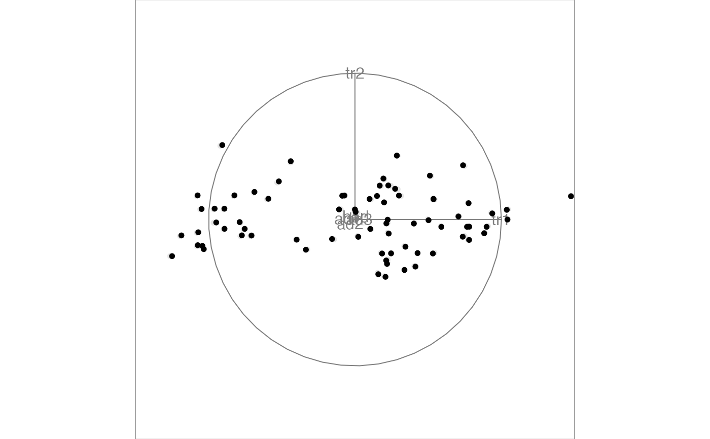
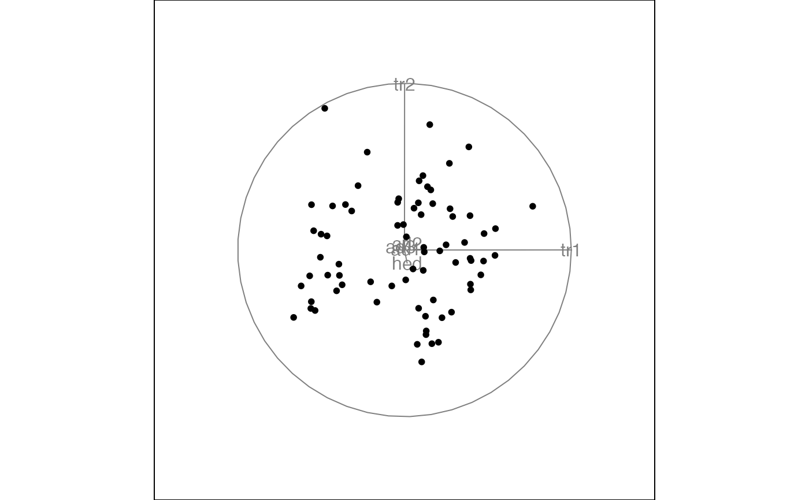
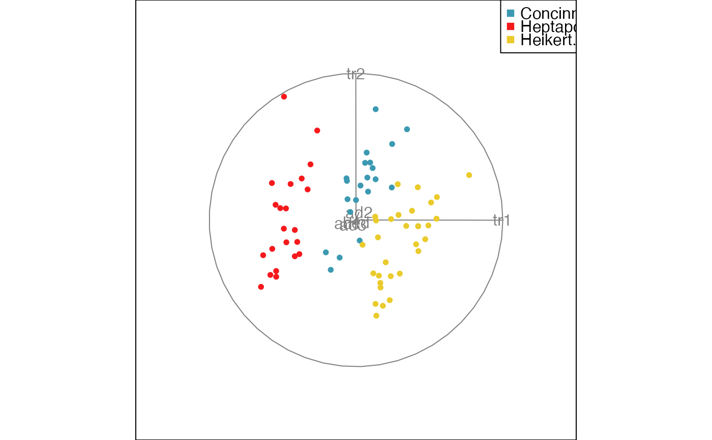

This data is from a paper by A. A. Lubischew, "On the Use of Discriminant Functions in Taxonomy", Biometrics, Dec 1962, pp.455-477. Data is standardized, and original units are in flea_raw.
Details
tars1, width of the first joint of the first tarsus in microns (the sum of measurements for both tarsi)
tars2, the same for the second joint
head, the maximal width of the head between the external edges of the eyes in 0.01 mm
ade1, the maximal width of the aedeagus in the fore-part in microns
ade2, the front angle of the aedeagus ( 1 unit = 7.5 degrees)
ade3, the aedeagus width from the side in microns
species, which species is being examined - concinna, heptapotamica, heikertingeri
Examples
head(flea)
#> tars1 tars2 head aede1 aede2 aede3 species
#> 1 0.4672579 0.8301402 0.9624458 1.4674223 0.939944768 0.6027161 Concinna
#> 2 0.2632633 1.1838660 -0.1276714 1.1775934 0.006308354 0.6726236 Concinna
#> 3 0.7732499 1.5375918 0.5990734 0.8877644 0.473126561 0.4629011 Concinna
#> 4 -0.1447259 0.3585059 -0.1276714 0.8877644 1.406762975 0.1133635 Concinna
#> 5 -0.2127241 -0.7026715 -0.4910438 1.7572513 0.006308354 0.7425311 Concinna
#> 6 -0.5867142 -0.7026715 -1.2177886 0.5013258 0.939944768 0.2531786 Concinna
animate_xy(flea[, -7])
#> Converting input data to the required matrix format.
#> Using half_range 4.4


animate_xy(flea[, -7], col = flea[, 7])
#> Converting input data to the required matrix format.
#> Using half_range 4.4

